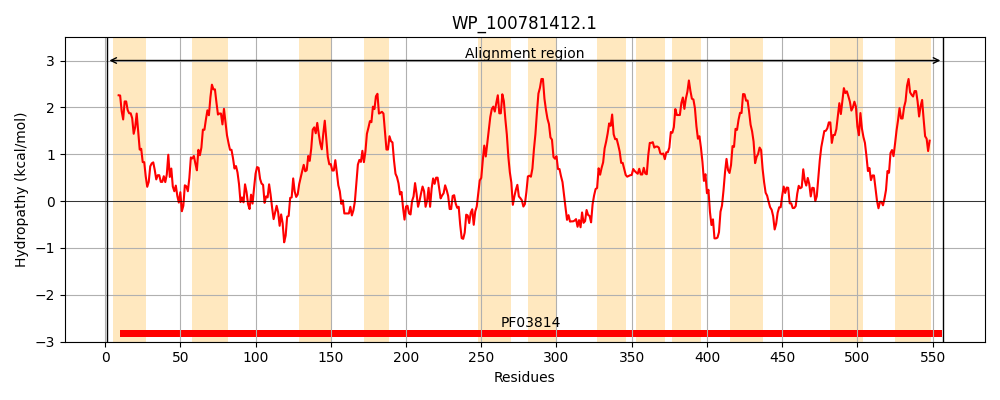
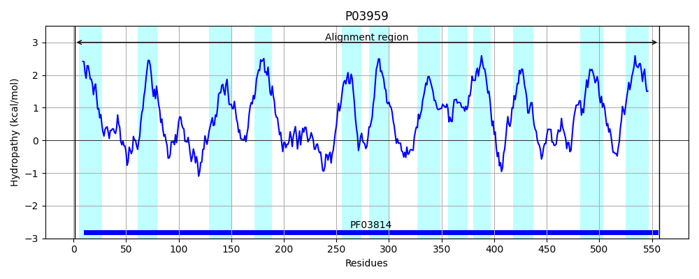
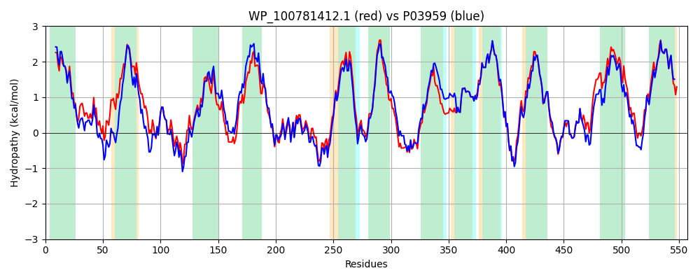

Hit Accession: P03959
Hit TCID: 3.A.3.7.1
Hit Description: gnl|BL_ORD_ID|8286 gnl|TC-DB|P03959|3.A.3.7.1 Potassium-transporting ATPase A chain (EC 3.6.3.12) (Potassium- translocating ATPase A chain) (ATP phosphohydrolase [potassium- transporting] A chain) (Potassium binding and translocating subunit A) - Escherichia coli.
Mach Len: 557
e:0.000000
Query TMS Count : 12
Hit TMS Count: 12
TMS-Overlap Score: 12.000000
Predicted Substrates:CHEBI:8345;potassium(1+)
BLAST Alignment:
Score: 2305 , Bit scores: 892 bits, E-value: 0.0e+00, Alignment length: 557, Percentage identity: 80
Query: 1 MAAQGFLLLASYLLVLLVLARPLGTCLARMVNDIPLPGLAGVERVLWRVAGIRAEEMGWLQYLLAILLFNALGGLALFALLMLQGVLPFNPQHLPGLSWDLALNTAVSFVSNTNWQAYAGESTMSYLSQMVGLTVQNFLSAATGIAVVFALTRAFARQKMSTLGNAWVDLTRITLWLLLPLSLLVALFFIQQGVPQNLLAYQPFTTLEGAHQLLPMGPVASQEAIKLLGTNGGGFFNANSAHPFENPTALTNLVQMLAIFLIPAALCFAFGEVVSDRRQGRAILWAMTLIFILCVAVVMWAETRGNPHLLTLGADSSLNMEGKESRFGILASSLFAVITTAASCGAVNAMHDSFTALGGMVPMWLMQIGEVVFGGVGSGLYGMLLFVMLAVFIAGLMVGRTPEYLGKKIDVREMKMIALAILVTPTLVLLGTALAMMTDAGRAGMFNPGPHGFSEVLYAVTSAANNNGSAFAGLGAATSFWNLLLAFCMLVGRFAVIIPVMAIAGSLVAKKIQPASPGTLATHDALFIGLLIGTVLLVGALTFIPALALGPLAEHFS 557
MAAQGFLL+A++LLVL+VLARPLG+ LAR++NDIPLPG GVERVL+R G+ EM W QYL AIL N LG LF +L+ Q LP NPQ LPGLSWDLALNTAVSFV+NTNWQ+Y+GE+T+SY SQM GLTVQNFLSAA+GIAV+FAL RAF RQ MSTLGNAWVDL RITLW+L+P++LL+ALFFIQQG QN L YQ T+EGA QLLPMGPVASQEAIK+LGTNGGGFFNANS+HPFENPTALTN VQMLAIFLIP ALCFAFGEV+ DRRQGR +LWAM++IF++CV VVMWAE +GNPHLL LG DSS+NMEGKESRFG+L SSLFAV+TTAASCGAV AMHDSFTALGGMVPMWLMQIGEVVFGGVGSGLYGM+LFV+LAVFIAGLM+GRTPEYLGKKIDVREMK+ ALAILVTPTLVL+G ALAMMTDAGR+ M NPGPHGFSEVLYAV+SAANNNGSAFAGL A + FWN LLAFCM VGRF VIIPVMAIAGSLV+KK Q AS GTL TH LF+GLLIGTVLLVGALTFIPALALGP+AE+ S
Sbjct: 1 MAAQGFLLIATFLLVLMVLARPLGSGLARLINDIPLPGTTGVERVLFRALGVSDREMNWKQYLCAILGLNMLGLAVLFFMLLGQHYLPLNPQQLPGLSWDLALNTAVSFVTNTNWQSYSGETTLSYFSQMAGLTVQNFLSAASGIAVIFALIRAFTRQSMSTLGNAWVDLLRITLWVLVPVALLIALFFIQQGALQNFLPYQAVNTVEGAQQLLPMGPVASQEAIKMLGTNGGGFFNANSSHPFENPTALTNFVQMLAIFLIPTALCFAFGEVMGDRRQGRMLLWAMSVIFVICVGVVMWAEVQGNPHLLALGTDSSINMEGKESRFGVLVSSLFAVVTTAASCGAVIAMHDSFTALGGMVPMWLMQIGEVVFGGVGSGLYGMMLFVLLAVFIAGLMIGRTPEYLGKKIDVREMKLTALAILVTPTLVLMGAALAMMTDAGRSAMLNPGPHGFSEVLYAVSSAANNNGSAFAGLSANSPFWNCLLAFCMFVGRFGVIIPVMAIAGSLVSKKSQAASSGTLPTHGPLFVGLLIGTVLLVGALTFIPALALGPVAEYLS 557 | Protein Hydropathy Plots: |
|---|
|  |  |
Pairwise Alignment-Hydropathy Plot:
|
|---|
|  |